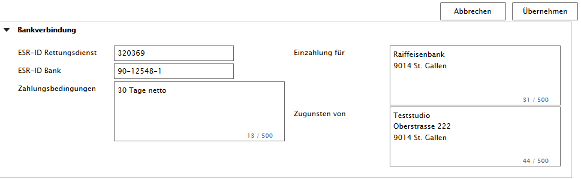
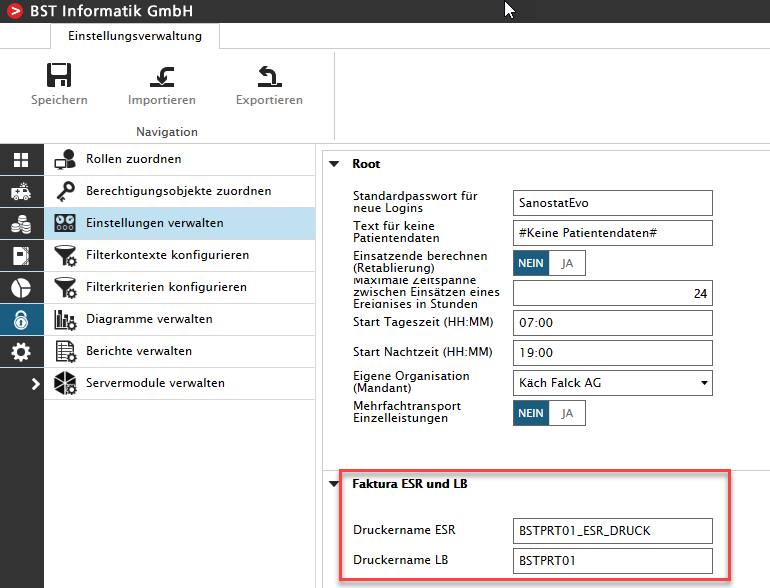

ESR-Druck und Drucklauf im Modul 'Faktura'
Der User mit den Rollen 'Rechnungsverwaltung' und/oder 'Superuser' hat nach dem Erstellen des Leistungsbelegs durch die Fakturaengine, folgende Möglichkeiten einen Leistungsbeleg mit ESR-Einzahlungsschein auszudrucken.
Das Ausdrucken von Rechnungen mit ESR-Einzahlungsscheinen ist mit dem zusätzlichen Modul 'Fakturierung_ESR' in Sanostat Evo möglich
Zu jedem Leistungsbeleg kann ein Ausdruck mit ESR Beleg erstellt werden
Nebst dem Einzahlungsschein können auf dem ESR Beleg auch die Rechnungsadresse und Hinweise zur Abrechnung (Zahlungskonditionen / Rechnungsnummer) ausgegeben werden
Im Modul 'Faktura' wird ein Drucklauf paarweise für kontrollierte Leistungsbelege und ESR Belege erstellt
Im Fakturajournal wird der Drucklauf protokolliert und gibt 'Drucklaufnummer' 'Gedruckt von' 'Rechnungsadresse' 'Patient' und 'Betrag' aus
Leistungsbelege und ESR Belege können einzeln und wiederholt gedruckt werden, einzeln nur aus der 'Vorschau LB' oder 'Vorschau ESR'
Nur der 'Superuser' kann in den Stammdaten unter 'Bankverbindung' die notwendigen Daten erfassen, siehe Sreenshot:

In den Einstellungen kann nur der 'Superuser' die notwendigen Drucker anwählen
